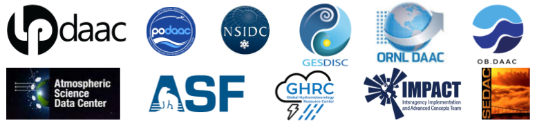
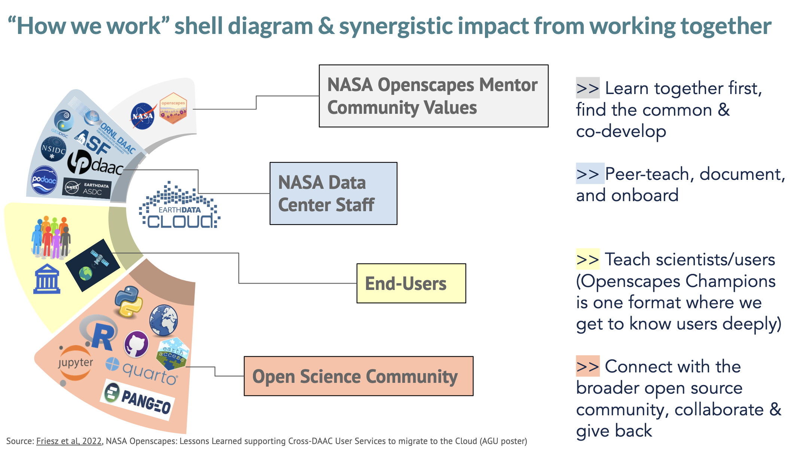

Mentors
A Mentor community across NASA Earth science data centers creating & teaching resources to help people using NASA Earthdata migrate their workflows to the cloud

NASA Openscapes Mentors have created “go-to” resources for staff and users using NASA Earthdata – such as the earthaccess python library and tutorials in the Earthdata Cloud Cookbook. Over the last four years, Mentors have developed these resources as a supportive community in response to teaching hundreds of NASA Earthdata users via workshops and events together, where they identify and rapidly respond to common needs then iterate through active use, documentation, and further teaching. Recent presentations showcasing this work is Supporting NASA Earthdata users in the Cloud: NASA Openscapes onboarding & fledging and earthaccess: how to accelerate user value through open, collaborative development.
Openscapes is a mechanism that can rapidly identify problems and bring people together to solve them. The NASA Openscapes Mentor community includes people across NASA Earth science data centers (DAACs) that work together to deliver work aligned with DAAC goals to enable science, enriched by collaborating with the open science community beyond NASA.
Current Activities
Building from successes and momentum 2021-2024, in 2025 NASA Openscapes will continue teaching users and developing solutions for pain points, while we all grow as open science leaders. This is vital work to support the shift to Earthdata Cloud and to NASA’s values for open science.
2025 goals
Our 2025 focus is strengthening NASA networks between DAACs, missions, training programs, and applications, aligned with SPD-41a open science, as we continue to support users through developing skills and tools. 2025 goals were determined by Mentors during our Fall 2024 Mentors Retreat.
We will move forward on the following four interlinking goals. Below is a brief overview of the purpose, outcomes, and process of each, and how to join us.
1. User support and co-development
Purpose: Supporting users in the Cloud, which requires infrastructure and skills. Skills include mindset shifts, as well as new technical and collaboration skills. Infrastructure requires co-developing software and resources as well as providing a JupyterHub compute space for developing tutorials and teaching workshops, which we do in partnership with 2i2c. The goal is to “make once, use often”, reusing materials and iterating and improving upon them as a distributed group of mentors who learn with, from, and for each other.
Outcomes: Users have a friendly onboarding experience using NASA Earthdata in the cloud. Users develop good practices for sustained work in the cloud, including parallelizing code, managing storage, and understanding cloud costs and options for “fledging” from our workshop Hub.
Process: We lead well-planned, welcoming, user-designed teaching events in a variety of formats including in-person and online (hackathons, workshops, Champions Cohorts, Community Calls, conference sessions). To prepare for these events, we develop open documentation, slides, and tutorials that are available for reuse and remix; we host a JupyterHub compute space in partnership with 2i2c; we co-develop technical cloud technical infrastructure including scientific software docker images, user access administration, cost reports/tracking, and documentation of user stories. We develop together asynchronously and synchronously via hackdays and coworking.
- To join teaching events: Check our News & Events page for registration, available in late summer.
- To join hackdays/coworking: Check our Cloud infrastructure GitHub to get involved in biweekly hackdays.
2. earthaccess python library
Purpose: To continue growth and sustainability of this python library that is used by 100’s of projects and 1000’s of users for accessing NASA Earthdata programmatically.
earthaccesssimplifies data discovery and access to NASA Earthdata by providing an abstraction layer to NASA’s APIs for programmatic access (CMR and EDL). It has complements in R and MATLAB that we can develop further.Outcomes: More users can easily access NASA Earthdata. Increased community engagement via developing scaffolding to reduce participation barriers (education and outreach); Software sustainability and maintenance and further feature development including integrating VirtualiZarr, testing on Cloud OPeNDAP-enabled collections (DMR++ compliance/consistency), building a plugin interface for services like Harmony, developing a “Results” Class that will be interoperable with the STAC ecosystem, using
earthaccessfor download scripts from Earthdata Search, and developing a Command Line Interface (CLI).Process: Community-driven and community-requested development, currently including contributors from multiple DAACs, NASA, and the open science community. We develop asynchronously as well as via biweekly hackdays. We also share progress and features via continued talks and events to support users and showcase capabilities.
- To join: The
earthaccesscontributing guide shares information about asynchronous contributions, joining biweekly hackdays, and the Zulip messaging board.
- To join: The
3. Champions Cohort (Fall 2025)
Purpose: To support users using NASA Earthdata in science workflows from multiple data centers, taught and supported by Mentors who get to understand user needs deeply and co-develop solutions. Potentially
earthaccess-focused to support users programmatically.Outcomes: Users learn skills for current best practices for using NASA Earthdata and are empowered to ask questions and work more collaboratively within and across teams. Users have more awareness of what is available, what is coming, and how to get involved as contributors.
Process: This flagship Openscapes Champions program has been led 27 times since 2019, with 3 previous Cohorts co-led with NASA Mentors. We will lead this year’s Cohort in Fall 2025, giving time to align with ESDIS and NASA Earth Action’s goals and communities. As there is current instability in our user communities, we will focus the spring and summer on developing relationships with user groups and restructuring the Champions Cohorts to best meet user needs.
- To join: Check our News & Events page for registration, available in late summer.
4. Earthdata Cloud Cookbook
Purpose: A curated collection of tutorials and documentation that focus on the common steps across DAACs and users. It is available for self-paced learning with links back to the underlying GitHub repository where it is developed and able to be reused and remixed. It is under active, open development. We are reaching a lot of users with workshops and our compiled resources; how can we continue to improve those events and resources?
Outcomes: A better-maintained resource that has contributors beyond the Mentors and a broadened set of users. What if we opened the scope beyond “cloud” and included other common Earthdata tutorials?
Process: Throughout all our user support, we trial materials with users that help us to update and improve the Earthdata Cloud Cookbook. Tutorials, presentations, and approaches are added to the Cookbook based on latest user needs and trends/tooling. For example, we are adding more support for R users, and we are reporting openly on compute and storage costs so that they could allot cloud funding into future proposals. Most Cookbook development is motivated by teaching events (workshops and hackathons and Champions).
- To join: Check our Cookbook GitHub Discussions; in Spring 2025 we are starting biweekly hackdays to drive more continual development alongside event-driven development. We are excited to build momentum with Development Seed contributions from VEDA. We can also collaborate with ESDIS for sharing cloud resources on the unified site, answering questions like: Does it need to be cloud-specific? Can it just be Earthdata specific?
How we work
Openscapes is about working effectively and openly as teams. We are user-focused and meet regularly to learn skills of immediate use together and to work on common needs for researchers using NASA Earthdata. We have an open science approach to resource development, where we focus on having space and place, sharing early and iterating with feedback, with a “make once, use often”, future us web-first mindset. Mentors build skills through Openscapes mentorship, co-developing events, software, and open practices and relationships with the open source community, with access to a JupyterHub that helps refine teaching strategies for Cloud.

Mentor Calls, Coworking, and Hackdays
We meet each week in different formats to move our work forward in different ways. The cadence in which we meet is available on our MainPlanning GitHub Project.
- Mentor Calls for planning, sharing, and learning (biweekly, for Mentors)
- Hackdays and Coworking for working synchronously and screensharing (biweekly, various topics, open to anyone!)
- Asynchronous work via 2i2c JupyterHub, GitHub, Slack, Google Drive. The majority of time is spent self-directed based on your goals, and you’ll be collaborating with others at your DAAC as well as across DAACs and the broader open science community.
Calendar
All Year We have recurring biweekly Mentor Calls, Coworking sessions, and Hackdays.
Summer and ESIP meeting - In July and August we planned to take a break from our biweekly calls to let this group rest. However, there was interest to keep the momentum and ability to collaborate with anyone available, so we have continued to host biweekly calls and move forward with AGU workshop proposals, and have guest speakers. In July many Mentors meet for the ESIP Summer Conference.
Fall Champions Cohort - We will support research teams to learn, discuss, and plan what transitioning their workflows with NASA Earthdata could look like in the Cloud. 2022-2024 Cohorts were during the Spring.
Fall - We regroup in Fall. Our initial call will include sharing plans, UWGs and other events on the calendar and continuing onboarding new DAAC mentors. In preparing for AGU workshops in December, returning DAAC mentors will lead teaching dry runs with the cloud tutorials as a way to onboard the group to data access in the cloud and to get your fresh perspective on our existing material. (What works? What’s confusing?).
Onboarding Mentors
Interested staff from the DAACs are welcome to join as Mentors at any time. Mentors teach and support in opportunities of different types, including Hackathons, Workshops, and the Openscapes Champions program. We expect a range of technical ability and teaching experience. Through these growth opportunities within a broader community engagement approach, Mentors will also gain visibility for their work as well as for their DAACs.
Please also see how we onboard documentation – this is part of the Earthdata Cloud Cookbook that is the main place for all cloud resources the Mentors are developing.
Ongoing and Previous Activities
2024 goals
NASA Openscapes is the main access point for NASA Earth science & tutorial development on the Cloud. Openscapes is not extra work, it’s the how of doing the work aligned with DAAC goals to enable users/science. Building from successes and momentum 2021-2023, in 2024 we will continue teaching staff & researchers, helping us all grow as open science leaders & aligned with DAAC activities. This is vital to the shift to Earthdata Cloud and to NASA’s values for open science.
- Provide stability for and strengthen the DAAC Mentor community as we develop and teach a common set of tutorials and coordinate and lead learning events, in part through our twice monthly Openscapes Cohort Calls.
- Reuse and refine shared teaching resources, share stories and lessons learned at conferences and meetups
- Lead events together (workshops and Champions cohort) with research teams, with Mentors assisting to support researchers and learn new modalities of support
- Support transition for NASA Earthdata users to the Cloud via continued effort to maintain development for cloud infrastructure & earthaccess Python library, Earthdata Cloud Cookbook & Cheatsheets, give talks, tie-in better with NASA Earthdata website, and cross-learning with NOAA and other Openscapes Mentors & Open science community. Additionally:
- Support transition for post-workshop researchers to do their science longer-term (“fledging”)
- Scoping 3 years ahead - understand how people use Hub & Cloud - what it costs, metrics. Quantifying open science outcomes - report back our successes
2024 focus
- earthaccess
- Cloud infrastructure
- Cookbook
- Workshop planning
In 2024 we introduced earthaccess Hackdays - specific times biweekly for the NASA Openscapes Mentors and broader community to co-develop the earthaccess python library. We led the 2024 cohort of science Champions (blog summary) as well as many mission and data specific workshops in person and online. We focused on “fledging” to explore the question of where do users go to do real science after they have learned in our 2i2c JupyterHub? We also continued collaborating with 2i2c and NOAA Fisheries to develop cloud in-frastructure to support NASA Earthdata users and explore costs per user and per science workflow (cloud infrastructure information).
Mentors Retreat 2024
We are excited to be hosting a NASA Openscapes Mentors Retreat Oct 16-17 2024 (remotely, online). Please share this email with your DAAC Managers. This retreat will bring together user support staff from across the DAACs that have engaged as leaders through NASA Openscapes and are helping users migrate workflows using NASA Earthdata to the cloud. It is also a way to onboard new user support staff as mentors. NASA Openscapes is not meant to be extra time, but time where people do their existing work in a different way – with open source science workflows to tackle common things together. We have seen the biggest momentum when there are 2-3 mentors at each DAAC, so that pairs/trios can work together within their DAAC as they bring back what they learn from cross-DAAC work. NASA Openscapes Lead Julie Lowndes is happy to email/meet with mentors and managers for any questions. Thank you to DAAC Managers and ESDIS for supporting staff in this way, it makes a real impact – more momentum & background below. This remote retreat will be co-designed & led with Liz Neeley of Liminal, a hero-expert in science communication and sensemaking and who has been getting to know you and your work over the past months.
Retreat Details - Oct 16-17 2024, 10am-2pm PT each day (remotely, online). We see the main value of this retreat as a chance to reconnect and reinvigorate our cross-DAAC community going into fall. We will hear from many voices to share progress and barriers to support users, and onboard more of our growing community as contributors as we refine our shared vision for momentum forward. We will follow up with report-out summaries and ways to contribute for mentors not able to join.
Momentum - NASA Openscapes Mentors have created “go-to” resources for staff and users across DAACs – such as the earthaccess python library and tutorials in the Earthdata Cloud Cookbook. Over the last 3.5 years, mentors have developed a supportive community and created these resources in response to teaching hundreds of DAAC users via workshops and events together, and then further iterated through active use, documentation, and teaching. Recent presentations showcasing this work is Supporting NASA Earthdata users in the Cloud: NASA Openscapes onboarding & fledging and earthaccess: how to accelerate user value through open, collaborative development; all work is developed openly and linked from https://nasa-openscapes.github.io.
Background - Openscapes is an open source approach and a movement. It is a way to work together that shifts culture by helping people find each other and collaboratively evolve their work with modern and kind open data science workflows. Openscapes launched in 2018 through funding from Mozilla, via an open science fellowship awarded to Julia Lowndes. Openscapes grew with funding from NASA Earthdata, via decades-long community building leadership by Erin Robinson. In addition to our flagship Champions program that helps science teams shift workflows to open science, we lead multi-year projects with NASA and NOAA. Our NASA work supports scientific researchers using data from NASA Distributed Active Archive Centers (DAACs) as they migrate workflows to the cloud; our NOAA work is part of the Biden-Harris Administration’s Inflation Reduction Act funds to support NOAA Fisheries’ data, infrastructure, and workforce modernization.
2023 goals
- Strengthen the DAAC Mentor community as they develop and teach a common set of tutorials and coordinate and lead learning events, in part through our twice monthly Openscapes Cohort Calls.
- Reuse and refine shared teaching resources, share stories and lessons learned at conferences and meetups
- Lead events together (a hackathon and Champions cohort) with research teams, with Mentors assisting to support researchers and learn new modalities of support
- Identify a plan for sustainability, including the technical and social infrastructure needed. Shift to a more of a community structure from a cohort structure
Calendar 2023
Mentor Calls (Planning) and Coworking Calls (screensharing and doing)
| Date | Mentor Call Topics | Coworking Call Topics |
|---|---|---|
| Aug 3 | NOAA Fisheries - NASA Mentors exchange | |
| Aug 9 | AGU Workshop abstracts refinement | |
| Aug 17 | Coiled.io collaboration kickoff with Champions teams | |
| Aug 23 | Aimee Barciauskas will present the initial cloud optimized data guide for feedback and determine next steps for sharing science tutorials from VEDA and MAAP | |
| Aug 31 | R Cloud Hackdays kickoff; Carl Boettiger | |
| Sept 6 | Cedric Wannaz, MathWorks to demo Matlab in 2i2c and analysis-in-place workflow (direct access/reading the data). Previous demo: https://youtube.com/watch?v=JrIp-LFpPAI | |
| Sept 14 | JupyterBook and JupyterHubs via CI - discourse | |
| Sept 20 | Fall Kickoff & new mentors onboarding | |
| Sept 28 | ||
| Oct 4 | AGU workshop planning overview (GitHub repo): goals, topics, people. Hyperwall. AGU mtg Dec 11-15. | |
| Oct 12 | ||
| Oct 18 | AGU (30 mins) | |
| Oct 26 | ||
| Nov 1 | AGU (30 mins) | |
| Nov 9 | ||
| Nov 15 | AGU dry runs with helpers | |
| Nov 23 | US Thanksgiving. No Coworking | |
| Nov 29 | AGU dry runs with helpers |
Coiled
This Fall we will also be working with Coiled.io, with the goal to support Mentors’ and Champions’ Cloud workflows on their own laptops as a viable pathway forward when they leave our JupyterHub, and for us all to learn more about what this looks like and how to parallelize computation in the cloud. To sign up for Coiled, please fill out this Google Form.
R Cloud Hackdays
This Fall during our coworking calls we’ll focus one breakout room on R tutorial development for the Cookbook. We’ll be joined by Carl Boettiger (Department of Environmental Science, Policy and Management and Eric and Wendy Schmidt Center for Data Science & Environment at UC Berkeley, co-founder of rOpenSci)!
2022 goals:
- Strengthen the DAAC Mentor community of practice as they develop and teach a common set of tutorials and coordinate and lead learning events, in part through our twice monthly Openscapes Cohort Calls
- Reuse and refine shared teaching resources, share stories and lessons learned at conferences and meetups
- Lead events together (a hackathon and Champions cohort) with research teams, with Mentors assisting to support researchers and learn new modalities of support
Our schedule:
Mentor kick-off 1:1’s! We’d like to meet with each DAAC mentor team to get to know you and discuss the specific needs of your DAAC and the research teams you support. Please coordinate with the others from your DAAC and book a 30-minute intro meeting the week of June 17 (or June 24 as a back-up).
June 30 Mentor Cohort Call We will have our first call with the full group of mentors on June 30 - to introduce everyone and orient around the NASA Openscapes project.
Summer Break - From the beginning of July through mid-August we are going to take a break from our biweekly calls to let this group rest. We hope that during this break each DAAC will do a bit of light planning for what they hope to accomplish in the next year to share at our first call when we return at the end of August.
Back to our DAAC Mentor schedule: We will pick back up on regular meetings on August 25 (or that week) with our biweekly meetings. Our initial call will include sharing plans, UWGs and other events on the calendar and continuing the orientation for new DAAC mentors. Returning DAAC mentors will walk through the initial cloud tutorials as a way to onboard the group to data access in the cloud and to get your fresh perspective on our existing material. (What works? What’s confusing?)
2021 goals:
- Build a DAAC community of practice through our twice monthly Openscapes Cohort Calls, a Carpentries Intro Python/Git Workshop, and Carpentries Instructor Training
- Develop participating teams as Mentors and help them practice teaching in a style to prepare them for a workshop at the American Geophysical Union Conference (AGU) (Dec) and the Openscapes Champions cohort with research teams (early 2022)
- Support Mentors towards establishing a common set of tutorials that they can then build off their DAAC-specific and science examples
2022 NASA Champions Cohort
Please see the Champions page!
2021 Cloud Hackathon
The Cloud Hackathon: Transitioning Earthdata Workflows to the Cloud is a virtual 5-day (4 hours per day) collaborative open science learning experience aimed at exploring, creating, and promoting effective cloud-based science and applications workflows using NASA Earthdata Cloud data, tools, and services (among others), in support of Earth science data processing and analysis in the era of big data. All details and tutorials are available at: https://nasa-openscapes.github.io/2021-Cloud-Hackathon/.
Mentor Community
The NASA Openscapes Mentors community is growing! Mentors from five DAACs who have continued from 2021 are noted with an * below. We are excited to see the DAAC mentor community expand with ORNL and ASF Mentors joining us in 2022 and SEDAC and OBDAAC Mentors joining in 2023 for representation from nine DAACs all together. Welcome!
Andy Barrett*
National Snow & Ice Data Center (NSIDC)
Chris Battisto
Chris is a Scientific Developer working at the Goddard Earth Sciences Data Information Services Center (GES DISC). He focuses on creating documentation and guides relating to a wide array of GES DISC user support needs, including cloud data access methods and help desk queries. Chris has a background in meteorology, and received a master’s degree in geography from Northern Illinois University in 2021.
Mikala Beig
National Snow & Ice Data Center (NSIDC)
Brandon Bottomley
Alaska Satellite Facility (ASF)
Ian Carroll
Dr. Carroll is an Associate Research Scientist at the University of Maryland Baltimore County working at NASA Goddard Space Flight Center on phytoplankton community ecology and data science. Phytoplankton are a broad collection of photosynthetic organisms, found in all water bodies, that range in size from less-than a micron to millimeters in length. Despite their small size, their presence in the photic zone can be detected from space due to their light-absorbing pigments. Dr. Carroll investigates machine learning approaches to predicting the community composition (abundances of each type) of phytoplankton using data from ocean color instruments. He also supports science data production for NASA’s PACE mission.
Alexis Hunzinger*
Alexis Hunzinger is a Support Scientist at the NASA Goddard Earth Sciences Data and Information Services Center (GES DISC), focused on addressing the needs of the user community. Alexis works closely with the GES DISC User Working Group, fielding concerns and suggestions to be implemented at the DAAC. She also leads the effort at GES DISC of developing guides, tutorials, and other resources designed to educate and welcome users to the Earthdata Cloud.
Mahsa Jami
Land Processes DAAC (LPDAAC)
Daniel Kaufman
Danny Kaufman is a Lead Data Scientist for the Tropospheric Emissions: Monitoring of POllution (TEMPO) instrument at the NASA Atmospheric Science Data Center (ASDC). In this role, Danny helps lead the development and coordination of data processing tools and services for new air quality observations from TEMPO. He is excited to join the Openscapes community, and he is looking forward to learning together and working towards improved cloud-based data analysis workflows. Danny’s research expertise is in numerical modeling, optimization, and analysis of ocean biogeochemistry and climate data.
Alexander Lewandowski
Alaska Satellite Facility (ASF)
Luis Lopez*
Luis Lopez is a Research Software Engineer at the National Snow and Ice Data Center (NSIDC) in Boulder, Colorado. He has helped develop tools and services to facilitate data access and discoverability across different NASA Earth missions. He is a passionate advocate of open science and has contributed to open source projects such as Apache Nutch, PyLDAVis and others. He’s always happy to help scientists find ways to make their workflows more efficient. Luis has presented his work at SciPy LATAM, PyData Global and the IEEE annual Big Data symposium.
Catalina Oaida Taglialatela*
Catalina M. OaidaTaglialatela, PhD is an Applied Science System Engineer at NASA’s JPL (and PO.DAAC), combining hydrology and Earth science domain expertise (science researcher by training) with a system engineering perspective. Focus on broadening the user base for NASA Earth observations and remote sensing data in the Cloud, and helping increase discoverability and usability of these data for the science research and applications communities, and enabling shorter “time to science”. Reducing those barriers to science when data and services are in the cloud, while recognizing that are different user needs, experiences, domain expertise, access to resources - create and implement a comprehensive plan to ensure as many of these user ‘types’ are supported. Develop science use cases as training examples, leveraging open data and open science (and tools). Learning from others and co-creating.
Celia Ou
Physical Oceanography DAAC (PO.DAAC)
Kytt MacManus
Socioeconomic Data and Application Data Center (SEDAC)
Juan Martinez
Socioeconomic Data and Application Data Center (SEDAC)
Victoria McDonald
As a Data Engineer at the Physical Oceanography Distributed Active Archive Center (PO.DAAC) at NASA’s Jet Propulsion Laboratory, Victoria spends a lot of time thinking about scientific data: how we manage it, how we make it usable, how we reduce the steep learning curves that can hinder scientific discovery. Building better, open, collaborative, software so that we can make complex data analysis more usable is something she is passionate about.
Jack McNelis*
Jack McNelis is a Science Applications Software Engineer at NASA Jet Propulsion Laboratory (and the PO.DAAC) with experience leveraging EOS data for rangeland ecosystem monitoring applications. He develops and curates metadata to describe PO.DAAC data holdings, and to better integrate them with data delivery services and end user softwares. He also develops resources for users to be better prepared to implement their analyses in the cloud.
Rupesh Shrestha
Oak Ridge National Laboratory (ORNL)
Sargent Shriver
Alaska Satellite Facility (ASF)
Geoffrey Stano
Global Hydrometeorology Resource Center (GHRC)
Amy Steiker*
Amy Steiker is the NSIDC DAAC Data Services Engineer, specializing in the development and management of data education resources, tools, and services for NSIDC DAAC’s growing user community, as well as data transformation service development for NASA EOSDIS. She is excited to join this first Openscapes cohort to work together with our science communities to develop and sustain tooling that supports their data processing workflows as they transition to the Earthdata Cloud.
Lucas Sterzinger
Goddard Earth Sciences Data and Information Services Center (GES DISC)
Nikki Tebaldi
Nikki Tebaldi is a Cloud Adoption Engineer for the Physical Oceanographic Distributed Active Archive Center (PO.DAAC). Nikki has led the migration of an on-premise workflow to the cloud which produces GHRSST Level 2P Sea Surface Temperature datasets and continues to work to improve the workflow architecture in the cloud. Her past and current work also includes integrating cloud-based data endpoints into a workflow that produces GHRSST Level 4 MUR Sea Surface Temperature datasets and architecting a cloud workflow that produces river discharge parameter estimates from SWOT data. Nikki is interested in collaborating on and developing strategies for migrating scientific workflows to the cloud.
Michele Thornton
Oak Ridge National Laboratory (ORNL)
Makhan Virdi*
Makhan Virdi is the ASDC DAAC Scientist, experienced in creating geospatial tools and services for science-based analysis, visualization (UI/UX), discovery and distribution of data generated by field/laboratory observations, remote sensing, and model simulation. He is interested in AI/ML for earth science data, multi-sensor data fusion, and data analytics in the cloud. He is excited to be part of the Openscapes community, and is looking forward to learning from peers, and sharing his knowledge and skills with the community to develop and promote data science techniques, best practices, and inter-agency collaborations.
Guoqing Wang
Guoqing Wang is the DAAC scientist for the Ocean Biology Distributed Active Archive Center (OB.DAAC). In her role, Guoqing leads the operation of user working group and acts as a bridge between users and data providers. She holds a PhD in Environmental Sciences at the University of Massachusetts Boston with a focus on ocean color remote sensing. She is experienced in ocean optics data collection, data processing and analysis, satellite validation, and algorithm development. She is looking forward to working with Openscape to leverage her existing knowledge to the cloud era.
Jess Welch
Since September 2018, Dr. Jessica Nicole Welch has held a position at the ORNL DAAC, which specializes in data archive for terrestrial biogeochemistry, ecology, and environmental processes. Her work focuses on dataset curation, project coordination, and science communication. Jess holds a PhD in Conservation Biology from the Department of Ecology and Evolutionary Biology at the University of Tennessee. When she’s not working at ORNL or participating in community service, she plays Ultimate with her friends.
Past Participants
Here we list past NASA Openscapes Mentors, with their affiliations at the time of their participation.
Jennifer Adams
Goddard Earth Sciences Data and Information Services Center (GES DISC)
Vishal Bagadia
Vishal Bagadia is a data science analyst working on contract at the Atmospheric Science Data Center DAAC, NASA Langley Research Center. His experience in exploring emissions retrievals from satellite missions and guiding science teams during the development of their research products powers his work on addressing data interoperability concerns and being responsive to user’s engagement with the archived data. He is energized in leveraging emerging, free, and open-source technologies to better represent and visualize large datasets, building web applications to meet user’s data transformation and usability needs, and ultimately producing sustainable solutions to meet end-user requirements as data moves into the cloud.
Matt Fisher
National Snow & Ice Data Center (NSIDC)
Aaron Friesz*
Aaron Friesz is the Science Coordination Lead at NASA’s Land Processes Distributed Active Archive Center (LP DAAC). In his role, Aaron provides user needs insights and technical support for archive and distribution, service development, and outreach activities. He develops tutorials, scripts, and presentations that highlight the use of land remote sensing data in analysis workflows. More recently, his work has focused on advocating for the uptake of cloud computing in the land remote sensing community.
Shubhankar Gahlot
Interagency Implementation and Advanced Concepts Team (IMPACT)
Iksha Gurung
Interagency Implementation and Advanced Concepts Team (IMPACT)
Cole Krehbiel
Cole Krehbiel is a remote sensing data scientist working as a contractor to NASA’s Land Processes Distributed Active Archive Center (LP DAAC). He is interested in improving access to geospatial data for many user communities. Cole supports missions archived and distributed by the LP DAAC including MODIS, VIIRS, ASTER, ECOSTRESS, and GEDI by creating Python tutorials and data prep scripts and providing workshops and webinars to facilitate community uptake and understanding of those missions.
Bri Lind
Bri is a Geospatial Data Scientist at NASA’s Land Processes Distributed Active Archive Center (LP DAAC). Bri is formally trained as an ecologist and remote sensing scientist and is deeply interested in facilitating the fusion of broad remote sensing products with field data to enhance scientific insight. As a visual learner and science-oriented coder, Bri is focused on making materials that are easy to understand and likes to convert challenging concepts into flexible and easy-to-apply approaches.
Paul Moth
Paul Moth is a Data Support Specialist at the National Snow and Ice Data Center Distributed Active Archive Center (NSIDC DAAC). He is part of the User Services team and currently represents MODIS, VIIRS, SMAP, High Mountain Asia, and Nimbus missions at NSIDC DAAC. He is interested in working with early adopters and science team members and gathering feedback that identifies the key operations/steps/workflows that would be most important for creating tutorials and educational materials.
Cassie Nickles
Dr. Nickles is an Applied Science Systems Engineer Postdoc working with the Physical Oceanography Data Active Archive Center (PO.DAAC) at NASA’s Jet Propulsion Laboratory (JPL). As an applied science researcher herself, Cassie focuses on the end-user experience working with cloud-based datasets. She writes coding tutorials in Jupyter Notebooks to help facilitate data ease of access and provide science application examples. She actively seeks ways to curate cloud data and information so that end-users from a variety of backgrounds can understand and discover their optimal cloud workflows. Cassie has research expertise in hydrologic remote sensing and graduated with a PhD in Civil Engineering from Northeastern University in 2021.
Brianna Pagán
Brianna is the Lead Development Engineer at NASA’s Goddard Earth Sciences (GES) Data and Information Services Center (DISC). In her role, Brianna guides the transition of on premise services to an entirely cloud-based infrastructure across various engineering teams. Her previous experience involves leading the research and development of remote-sensing based products, working alongside teams of geospatial scientists and developers to get services in production environments. Brianna’s research expertise is in remote sensing and eco-hydrology.
Muthukumaran Ramasubramanian
Interagency Implementation and Advanced Concepts Team (IMPACT)
Christine Smit
Global Hydrometeorology Resource Center (GHRC)
Matt Tisdale
Matt Tisdale is a data scientist working at the NASA Atmospheric Science Data Center (ASDC). He is interested in improving access to ASDC satellite and airborne data products. He uses ArcGIS, OPeNDAP, Python, and Jupyter notebooks to show users how to obtain and analyze data from ASDC. I am interested in learning more cloud analysis techniques to share with our user base as more and more of our ASDC data products are migrated to the cloud.